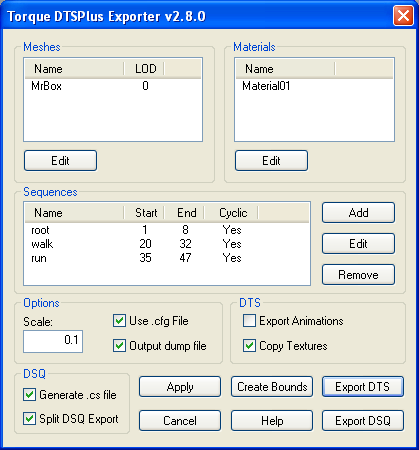

Main Dialog
The main exporter dialog box appears when you select the "Torque DTS Plus..." exporter from the File->Export list. All meshes, materials and animation sequences that are to be exported are listed here, and many of the properties of each can be modified before exporting.
To edit a mesh, material or sequence, select the object by clicking the name in the first column of the list. Then press the Edit button to open the relevant edit dialog. Any changes made while the main dialog box is open are applied to the model unless you select Cancel.
The Milkshape SDK does not support shared vertices between mesh groups, so after exporting, seams may appear in the milkshape model that are not present in the exported model. This is easily resolved by selecting the vertices and rewelding.

- Meshes
- Lists all meshes that will be exported, as well as their detail level. Edit a mesh by clicking its name, then selecting Edit.
- Materials
- Lists all materials that will be exported. Materials in the model that are not attached to any mesh are not included. Edit a material by clicking its name, then selecting Edit.
- Sequences
- Lists all defined animation sequences, as well as some of their properties. Edit a sequence by clicking its name, then selecting Edit.
- Add
- Add a new sequence. The sequence editor dialog box will open so you can edit the new sequence. New sequences will be added to the Milkshape model unless you press Cancel.
- Remove
- Removes the selected sequence. Removed sequences will be removed from the Milkshape model unless you press Cancel.
- Scale
- Global scale factor applied to the model when it is exported.
- Use .cfg File
- If checked, the exporter will search for a config file with the same name as the exported shape. eg shape.cfg for the exported shape.dts. If unchecked, the default configuration will be used. See Default Configuration.
- Output Dump File
- If checked, an HTML file called dump.html will be created in the same directory as the exported shape. See Dump Files
- Export Animations
- If checked, animation information will be written to the DTS shape. This flag is ignored when exporting DSQ files.
- Copy Textures
- If checked, all textures used in the exported shape will be copied to the export directory. This flag is ignored when exporting DSQ files.
- Generate .cs file
- If checked, a TorqueScript .cs file will be created that can be used to load the shape (with DSQ animations) in TGE. This flag is ignored when exporting DTS files.
- Split DSQ export
- If checked, each animation will be stored in a separate DSQ file. The name of each file is base_animname.dsq. Where base is the name chosen in the 'Save As' dialog, and animname is the name of the animation. If this flag is unchecked, all animations will be stored in the same DSQ file. This flag is ignored when exporting DTS files.
- Apply
- Apply changes to the Milkshape model. The exporter dialog box will remain open.
- Cancel
- Close the exporter dialog box without applying any changes.
- Help
- Display this page.
- Create Bounds Mesh
- Creates the bounding box mesh and Root bone if they do not already exist. The bounding box mesh can be animated to generate ground transforms for walking and running animations. The bounding box is a cube equal to the extents of the current model. The changes will be applied to the model unless you press Cancel. See Shape Structure.
- Export DTS
- Export the current shape to a dts file.
- Export DSQ
- Export all animation sequences to a dsq file. See DSQ Export.